|
Charla en el IRC: “Cube Begins...” |
|
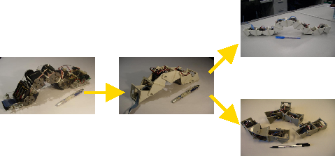 |
Una de las actividades de la asociación de robótica A.R.D.E, es la de difundir la robótica a través de charlas impartidas por el IRC. Yo tuve el honor de ser el primero de los “conferenciantes” . Hablé sobre la “saga” de robots modulares en la que estoy trabajando: cómo nació la idea, los problemas que fui encontrando, la evolución, etc.
Conferenciante: Juan González Gómez
Fecha: 27 de Noviembre de 2005
Hora: 19h
Lugar: IRC Hispano (irc-hispano.org). Canal #A.R.D.E.
Organiza: A.R.D.E. (Asociación de Robótica de España)
Duración: 1 hora
Asistentes: 34
|
Presentación |
@Moderador_uno
> Bueno son las 19:00 , ahora vamos a comenzar
@Moderador_uno
> Bienvenidos a la primera conferencia del irc organizada por
A.R.D.E.
@Moderador_uno
> titulada "Cube Begins..."
@Moderador_uno >
Esta conferencia correrá a cargo de Juan
González Gómez.
@Moderador_uno
> Juan es profesor de robótica en la Universidad
Autónoma de Madrid.
@Moderador_uno > Cofundador
de IEARobotics (www.iearobotics.com)
y miembro de A.R.D.E.
como vosotros
@Moderador_uno > Juan investiga desde hace
años en el área de robótica modular
reconfigurable,
@Moderador_uno > especialmente en la
modalidad de ápodos (robots sin patas).
@Moderador_uno >
Ha desarrollado una saga de robots gusano denominados
"Cube"
@Moderador_uno > (Cube 1.0 => Cube
2.0 => Cube Reloaded => Cube Revolutions).
@Moderador_uno
> Durante la conferencia explicará cómo empezó,
cómo se le ocurrió la idea,
@Moderador_uno >
que tecnología empleó y cómo fue
evolucionando.
@Moderador_uno > Al final habrá un
tiempo para que hagáis a Juan las preguntas que queráis
sobre este tema.
@Moderador_dos > El funcionamiento del
canal es moderado
@Moderador_uno > Al ser un irc
moderado, no podréis escribir directamente sin que se os de la
palabra.
@Moderador_uno > Para ello tendréis que
mandar un mensaje a uno de los dos moderadores,
@Moderador_uno
> cosa que se hace dando al botón derecho del ratón
sobre uno de los nombres de los moderadores
@Moderador_uno >
ahora cedemos la palabra a Juan
González.
@Moderador_uno
> Juan, bienvenido y muchas gracias por inaugurar las sesiones
de conferencias en el irc de A.R.D.E.
@obijuan
> Gracias por la presentación :-)
@obijuan > Y
muchas gracias por invitarme
@obijuan > voy a empezar
primero con los antecedentes, para que los que no me conozcan sepan
algo de mí
@obijuan > y cómo me he metido
en este mundo
@obijuan > Mi página personal es
esta, para los que queráis cotillear:
@obijuan >
http://www.iearobotics.com/personal/juan/
|
ANTECEDENTES |
@obijuan
> Desde pequeño la robótica me ha fascinado, me
imagino que como a todos vosotros
@obijuan > Tal vez sea
porque veía la serie de Mazinguer Z, no lo sé
@obijuan
> Comencé con esto de la informática a las 11
años, con un maravilloso Spectrum.
Me enganché :-)
@obijuan > Entré en la
Universidad en el curso 91/92. Aunque la informática siempre
me ha apasionado, me decanté por estudiar Teleco
@obijuan
> para aprender más sobre electrónica
@obijuan
> En el 95, en una de las asignaturas, descubrimos los
microcontroladores
@obijuan > Por aquel entonces, los
micros eran "esos grandes desconocidos".
@obijuan >
No eran tan populares como ahora. Me fascinaron
@obijuan >
¡Tu propio mini-ordenador en pequeñito!!
@obijuan
> Junto con Andrés
Prieto-Moreno, Juan José San Martín (Peco) y
Cristina Doblado:
|
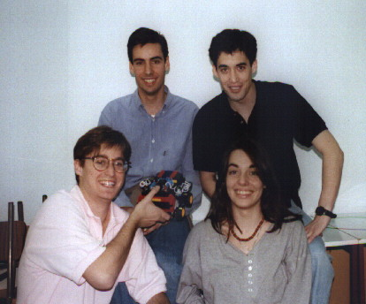 |
@obijuan >
empezamos a construir sistemas basados en el microcontrolador
68hc11 de
Motorola. Cada vez más sofisticados
@obijuan > En
paralelo empezamos a aplicar estos sistemas para el control de
robots: lectura de sensores, movimiento de motores...
@obijuan
> ¡Qué emoción cuando movimos nuestro
primero motor!!!!
@obijuan > Después de hacer
unas cuantas tarjetas con el 6811, nos planteamos tener un "cerebro"
mínimo y fácil de usar,
@obijuan > a
partir del cual poder hacer prototipos muy rápidamente, no
sólo de robots
@obijuan > Así fue como
nació la tarjeta CT6811:
@obijuan >
http://www.iearobotics.com/proyectos/ct6811/ct6811.html
@obijuan
> Cono este hardware podíamos construir robots muy
rápidamente y nos dimos cuenta que era muy fácil
@obijuan
> Empezamos a dar talleres de robótica para enseñar
a la gente cómo construirse su primer robot.
@obijuan >
Por cierto, que en el taller del 97 fue donde conocí a Jorge
Montero ;-), uno de los webmasters de A.R.D.E.
@obijuan
> y que me acabo de enterar que va a ser padre!!
@obijuan
> La CT6811 fue la
primera placa que hicimos de manera "industrial" (placa
verde).
@obijuan > Para aplicaciones de robótica
hicimos la tarjeta CT293, que nos permitía mover dos
motores de contínua y
@obijuan > utilizar 4
sensores de infrarrojos del tipo CNY70:
@obijuan >
http://www.iearobotics.com/proyectos/ct293/ct293.html
@obijuan
> Con ello construimos el robot Tritt. El robot más
básico posible, hecho con piezas de lego y servos
Futaba "trucados":
@obijuan >
http://www.iearobotics.com/proyectos/tritt/tritt.html
@obijuan
> Además, hicimos otros robots, como quark:
|
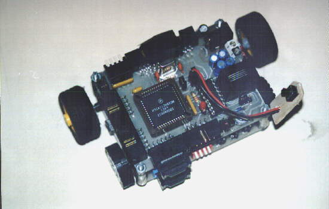 |
@obijuan
> Monumental:
|
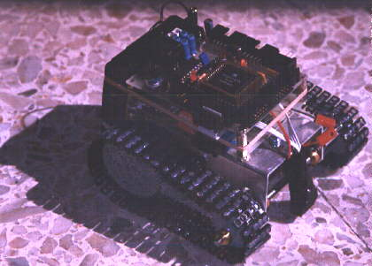 |
@obijuan
> Goliat, que en realidad este fue el primer seguidor
de línea que hicimos:
|
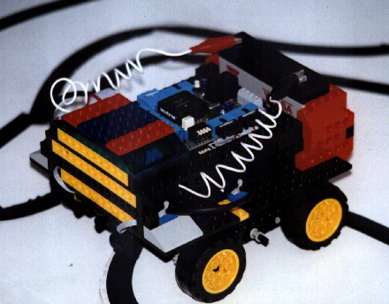 |
@obijuan
> Y otros un poco más sofisticados como la hormiga
Benita:
|
|
@obijuan
> Por cierto, el nombre se lo pusimos por un profesor de la
escuela que se llamaba Benito :-)
@obijuan > También,
por esa época es cuando fui seducido por el "lado libre
del software" y me pasé definitivamente a Linux,
otra de mis grandes pasiones
|
CUBE 1.0 |
@obijuan
> Yo me plantee el proyecto fin de carrera por el 99, que por
aquel entonces estaba haciendo la mili, en Cádiz por cierto
;-)
@obijuan > Ya habíamos hecho robots con
ruedas, robots con orugas y robots articulados. Andrés
estaba trabajando en Puchobot, que también fue su
proyecto fin de carrera:
@obijuan >
http://www.iearobotics.com/personal/andres/proyectos/pucho/pucho.html
@obijuan
> A mí siempre me habían gustado mucho los
brazos robots, así que empecé a construir
uno
@obijuan > Como material utilicé madera. Era
muy fácil de cortar con segueta, de taladrar, etc...
@obijuan
> Para las articulaciones usaba los archi-conocidos servos
futaba:
@obijuan >
http://www.iearobotics.com/proyectos/cuadernos/ct3/ct3.html
@obijuan
> Hice una primera estructura mecánica como prototipo
(es una pena, no tengo fotos), con 3 servos
@obijuan >
Encontré cantidad de problemas: excesivas vibraciones,
problemas de fuerza (el servo del nombro no podía levantar
todo el brazo), etc...
@obijuan > lo típico
cuando uno empieza a hacer este tipo de robots :-)
@obijuan >
Así que desmonté la estructura para hacer una mejor y
cuando lo tenía desmontado me fijé en el antebrazo y el
brazo del robot,
@obijuan > que estaban unidos por un
servo
@obijuan > Lo empecé a mover con la mano y
fue cuando se me ocurrió la idea de hacer una "cadena de
servos" unidos por piezas de madera
@obijuan > Y
rápidamente me surgió la pregunta:
@obijuan >
¿Se podría hacer que esta cadena de servos se mueva
en línea recta?
@obijuan > ¿Cómo
habría que cooridnar los servos para andar? Y así
nació CUBE 1.0 :-)
@obijuan > Por cierto,
el nombre viene de la película de miedo CUBE. Me encantó
y como por entonces un robot tipo gusano era algo "raro",
lo bauticé como Cube
@obijuan > Con las mismas
piezas de madera del brazo robot improvisé una cadena de 3
servos
@obijuan > Los servos estaban unidos mediante
piezas rectangulares pegadas con cinta aislante (super
cutre)
@obijuan > Una cutre-estructura improvisada sobre
la marcha, para hacerme una idea
@obijuan > En el PC
tenía hecho un programa, para consola, que me permitía
mover los servos y estuve haciendo experimentos.
@obijuan >
Ví que aquello se podría llegar a mover y que era
viable
@obijuan > Así que hice una estructura un
poco mejor, también con madera:
|
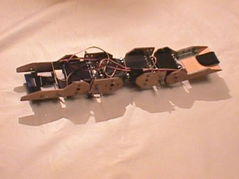 |
@obijuan
> Fijaros que los servos tienen "doble eje"
@obijuan
> Esta fue una idea de Andrés
y que estaba utilizando en PuchoBot.
Tomando las piezas sueltas de un servo (que también se venden)
se podía unir la parte superior (del eje) con un servo normal,
como podéis ver aquí:
|
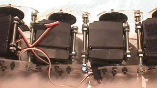 |
@obijuan
> Así se consigue tener un servo con un falso eje y es
más fácil hacer los robots articulados
@obijuan >
Recordar que esto era por el 1999-2000. Hoy hay soluciones más
sencillas para el doble eje, como la que ha utilizado Alejandro
Alonso en Melanie,
pegando un "gancho de cocina" directamente en la base del
servo
@Moderador_uno > si me permites Juan es para que
vean el doble eje
@obijuan > si, claro
@Moderador_uno
>
http://www.webdearde.com/arde/conferencia-cube/servos-de-canto2.gif
@obijuan
> o como la estructura de doble eje de Robótika
que ha puesto en la web de A.R.D.E.
@obijuan
>
http://www.webdearde.com/modules/Talleres/segundoejeservo/index.html
@obijuan
> Añadí una tarjeta
CT6811, unas pilas para la electrónica
y así ya estaba listo Cube
1.0:
|
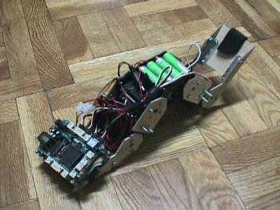 |
@obijuan
> Pero... cómo se movía?
@obijuan >
Las secuencias de movimiento las generaba manualmente
@obijuan
> La Tarjeta
CT6811 se conectaba por el puerto serie al PC y en
él ejecutaba el programa "cube-físico", que
me permitía crear y reproducir secuencias de movimiento.

@obijuan
> Mediante las barras deslizantes se colocan las
articulaciones del gusano y se graba su posición
@obijuan
> Luego se sitúan en otra posición y así
se generan las secuencias...
@obijuan > es un proceso
lento. Al finalizar, se reproduce la secuencia y el gusano se
mueve
@obijuan > Para el interfaz de
generación/reproducción de secuencias me basé,
una vez más, en el software que había hecho Andrés
para PuchoBot
@obijuan
> Lo programé para entornos Linux, en lenguaje
C, utilizando las librerías gráficas GTK
1.0
@obijuan > Mediante estas secuencias manuales,
CUBE 1.0 se movía. Lo hacía de manera muy
brusca, pero se movía
@obijuan > La primera vez
que lo vió moverse mi hermana exclamó: "Qué
asco!!"
@obijuan > y claro, a mí me llenó
de orgullo porque eso quería decir que se parecía en
algo a un gusano de verdad :-)
@obijuan > Luego me hice
la pregunta: "¿Cómo se podría hacer
para que las articulaciones se coordinasen correctamente y que se
consiguiese generar movimiento de una manera automática?”
@obijuan
> y así es como nació la siguiente versión
de Cube: Cube 2.0, que fue la que presenté como
proyecto fin de carrera
|
CUBE 2.0 |
@obijuan
> Desafortunadamente de Cube 2.0 no tengo muchos
vídeos.
@obijuan > Por esa época era muy
difícil encontrar cámaras de vídeo digitales con
vídeo (casi nadie tenía). Aquí podéis ver
un vídeo un poco cutre:
@obijuan >
http://www.iearobotics.com/personal/juan/proyectos/cube-2.0/video/cube-2-0-video.mpg
@obijuan
> La estructura mecánica está un poco mejorada.
Esta vez utilicé como material metacrilato transparente de 3
mm
@obijuan > Aquí hay más información
sobre la mecánica:
@obijuan >
http://www.iearobotics.com/personal/juan/proyectos/cube-2.0/mecanica.html
@obijuan
> Toda la información me gusta publicarla :-). La web
de Cube 2.0 es:
@obijuan >
http://www.iearobotics.com/personal/juan/proyectos/cube-2.0/cube.html
@obijuan
> Este es un plano de la mecánica final de Cube
2.0:
@obijuan >
http://www.iearobotics.com/personal/juan/proyectos/cube-2.0/planos/estructura-cube.pdf
@obijuan
> Sólo tiene 4 servos, pero con la idea de que en el
futuro se pudiesen incorporar más, utilicé como
electrónica la red de microcontroladores que había
diseñado Andrés
para PuchoBot.
@obijuan
> Él había hecho una placa muy pequeña y
barata, con la que controlar directamente 4 servos. Es la tarjeta
BT6811:
@obijuan >
http://www.iearobotics.com/proyectos/bt6811/bt6811.html
@obijuan
> Mediante el bus SPI de Motorola, una Tarjeta
CT6811 enviaría comandos a las BT6811s
para posicionar los servos
@obijuan > El esquema para
controlar un gusano con 8 servos sería el siguiente:
|
|
@obijuan
> Ahora Cube
era ampliable, tanto a nivel de mecánica como a nivel
electrónico
@obijuan > Me quedaba por hacer lo
más interesante: la generación automática de
movimiento.
@obijuan > Me fijé en los gusanos de
seda
@obijuan > El motivo fundamental era que son el
único tipo de gusano que son socialmente aceptables y los
podría tener en casa sin que mi madre me echara :-)
@obijuan
> Vi que el movimiento realmente se hacía por la
propagación de ondas que se desplazaban por el cuerpo del
gusano, desde la cola hasta la cabeza
@obijuan > El
cuerpo del gusano se iba deformando según la onda de
contracción se iba propagando
@obijuan > La idea
clave para conseguir el movimiento y coordinación era hacer
que las articulaciones de Cube
adoptasen la forma de una onda, en un instante de tiempo.
@obijuan
> Hice un programa para modelar esto:
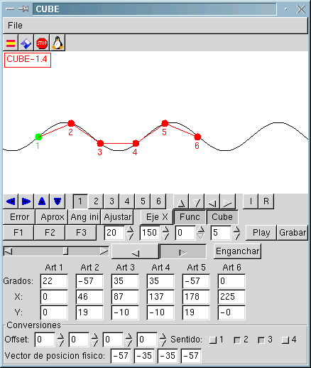
@obijuan
> El gusano está modelado mediante círculos, que
representan las articulaciones, unidos con líneas rectas, que
representan los segmentos del cuerpo
@obijuan > Todas
las articlaciones están situadas sobre una onda
sinusoidal
@obijuan > Para generar la secuencia de
movimiento se parte de una onda en un instante, de un gusano en
reposo y utilizando el "algoritmo de ajuste" se calculan
los ángulos de las articulaciones para que el gusano tome la
forma de la onda:
|
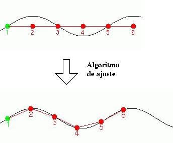 |
@obijuan
> Después, se desplaza la onda y se vuelve a "ajustar"
el gusano:
|
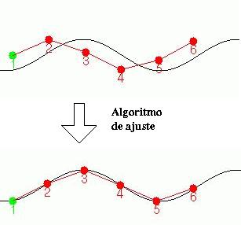 |
@obijuan
> Repitiendo el proceso se obtiene una secuencia de movimiento
similar a esta:
|
|
@obijuan
> Estas secuencias generadas se almacenan en un fichero y se
pueden enviar a Cube
2.0 a través del puerto serie
@obijuan
> Lo realmente interesante es que ahora el movimiento del
gusano estaba caracterizado por los parámetros de las
ondas.
@obijuan > Si se aplica una onda con menor
amplitud, se consigue un tipo de movimiento.
@obijuan >
Si se aplica otra amplitud o longitud de onda, se consigue otro
diferente
@obijuan > ¡Ahora Cube se podía
mover de infinitas maneras!
@obijuan > Una vez que tenía
listo el software y el gusano andaba, lo documenté, escribí
el proyecto y lo presenté
@obijuan > Toda la
información, el software, el propio proyecto, etc, están
disponibles en la dirección:
@obijuan >
http://www.iearobotics.com/personal/juan/proyectos/cube-2.0/cube.html
@obijuan
> Para la gente que sólo quiera tener una idea general
y leer una introducción a la robótica, podéis
ver el capítulo de introducción:
@obijuan >
http://www.iearobotics.com/personal/juan/proyectos/cube-2.0/doc/cube_1.pdf
@obijuan
> Los que os gusten más las matemáticas y
queráis recordar cómo eran las ecuaciones de las ondas
o profundizar en los detalles de los mecanismos de movimietno de Cube
2.0:
@obijuan >
http://www.iearobotics.com/personal/juan/proyectos/cube-2.0/doc/cube_2.pdf
@obijuan
> Y para los que os guste más el cacharreo y queráis
ver cómo está programado y cómo funcionan todas
sus tripas:
@obijuan >
http://www.iearobotics.com/personal/juan/proyectos/cube-2.0/doc/cube_3.pdf
@obijuan
> Este proyecto lo leí en Junio de 2001
|
CUBE RELOADED |
@obijuan
> Cuando leí el proyecto, yo estaba trabajando en una
empresa (Pulsar) y antes de eso en Microbótica.
@obijuan
> En el verano del 2001 decidí dejarlo todo, volver a
la universidad y empezar el doctorado. Quería seguir
investigando en robots ápodos
@obijuan > Durante
el primer año del doctorado no tuve mucho tiempo para hacer
mejoras. Pero destaco dos trabajos que hice:
@obijuan >
Uno fue una tarjeta entrenadora para FPGA:
@obijuan >
http://www.iearobotics.com/personal/juan/doctorado/jps-xpc84/jps-xpc84.html
@obijuan
> y otro un estudio sobre el estado del arte de los robots
ápodos:
@obijuan >
http://www.iearobotics.com/personal/juan/doctorado/Robots_apodos/estudio_apodos.html
@obijuan
> Al hacer este trabajo fue cuando estudié con más
detenimiento los trabajos de Mark
Yim, un investigador que por aquel entonces estaba en el
PARC,
@obijuan > y que había desarrollado toda la
familia de robots Polybot:
@obijuan >
http://www2.parc.com/spl/projects/modrobots/chain/polybot/
@obijuan
> Quedé totalmente fascinado con la idea de la
"Robótica Modular Reconfigurable":
@obijuan
> Robots constituidos a partir de módulos muy simples y
que son capaces de cambiar su forma
@obijuan > También
me quedé alucinado de la sencillez de los módulos que
había diseñado Mark
Yim: Los módulos G1, construidos a partir de piezas de
plástico y servos normales:
@obijuan >
http://www2.parc.com/spl/projects/modrobots/chain/polybot/g1.html
@obijuan
> Y sobre todo con la genial idea de la conexión en
fase o desfase
@obijuan > Para conseguir 2
grados de libertad estos módulos se podían conectar con
la misma orientación o rotados 90 grados uno con respecto al
otro.
@obijuan > Una idea genial!! y sobre todo muy
sencilla!!!!
@obijuan > Como trabajo de iniciación
a la investigación, durante el segundo año del
doctorado, decidí aplicar estas ideas,
@obijuan >
y diseñar un nuevo robot gusano. Esta vez me centraría
en diseñar unos módulos muy sencillos, basados en los
de Mark
Yim.
@obijuan > Y después de varios
prototipos iniciales, obtuve los Módulos Y1:
@obijuan
>
www.iearobotics.com/personal/juan/doctorado/Modulos-Y1/modulos-y1.html
@obijuan
> Utilicé como material PVC expandido de 3 mm de
grosor, que es muy fácil de cortar con una segueta y que se
pega muy bien con pegamentos para plásticos
@obijuan >
En este vídeo podéis ver un módulo
Y1 en movimiento:
@obijuan >
http://www.iearobotics.com/personal/juan/doctorado/Modulos-Y1/download/video1.mpg
@obijuan
> Estos módulos, sólo tienen un servo Futaba
3003. La electrónica y la alimentación se tienen
que situar fuera
@obijuan > En esta foto podéis
ver las dos formas de conexión:
|
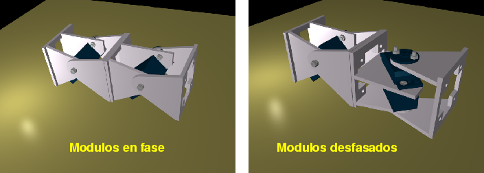 |
@obijuan
> Pero lo mejor es ver vídeos. Aquí hay dos
módulo
Y1 conectados en fase:
@obijuan >
http://www.iearobotics.com/personal/juan/doctorado/Modulos-Y1/download/video3.mpg
@obijuan
> Y aquí dos en desfase:
@obijuan >
http://www.iearobotics.com/personal/juan/doctorado/Modulos-Y1/download/video2.mpg
@obijuan
> Los planos están hechos con un programa libre de
diseño en 2D (QCAD)
@obijuan
> y están grabados en formato .dxf (que Autocad también
puede leer)
@obijuan > Los modelos 3D los hice con el
programa Blender, que es libre y está disponible para
plataformas Linux y Windows:
@obijuan >
http://www.blender.org/cms/Home.2.0.html
@obijuan
> Los interesados probad a descargaros el Blender
y luego cargad el módulo
Y1 para verlo en 3D, desde todos los
ángulos:
@obijuan >
http://www.iearobotics.com/personal/juan/doctorado/cube-revolutions/download/Modulo-Y1.blend
@obijuan
> Ya veréis cómo mola!!!!!
@obijuan >
Para construir los módulo
Y1 hay que imprimirse esta plantilla:
@obijuan
>
http://www.iearobotics.com/personal/juan/doctorado/Modulos-Y1/download/plantillas.pdf
@obijuan
> en una hoja Din-A4 transparente de tipo "pegatina",
pegarla sobre la superficie de PVC o el material a emplear y con una
segueta cortar las piezas
@obijuan > Una vez que tenemos
las piezas, hay que seguir el proceso de montaje descrito
aquí:
@obijuan >
http://www.iearobotics.com/personal/juan/doctorado/Modulos-Y1/montaje.html
@obijuan
> Ahora, uniendo 4 módulo
Y1 en fase, formando una cadena, se obtiene el
robot Cube Reloaded.
@obijuan > El nombre viene
de la segunda parte de Matrix: Matrix Reloaded.
@obijuan >
Toda la documentación está aquí:
@obijuan
>
http://www.iearobotics.com/personal/juan/doctorado/cube-reloaded/index.html
@obijuan
> Aquí podéis ver un vídeo de Cube
Reloaded en acción:
@obijuan >
http://www.iearobotics.com/personal/juan/doctorado/cube-reloaded/download/cube-crm-1.avi
@obijuan
> El movimiento era mucho más suave que con Cube
2.0 y sobre todo mucho más real
@obijuan
> Cambiando el tipo de onda y los parámetros se
consiguen diferentes movimientos.
@obijuan > Al final de
esta página podéis ver los distintos tipos de
movimiento que se consiguen según las ondas
aplicadas:
@obijuan >
http://www.iearobotics.com/personal/juan/doctorado/cube-reloaded/controlii.html
@obijuan
> Por ejemplo, una amplitud pequeña permite que el
gusano pueda pasar por debajo de obstáculos o que se
introduzca por un tubo de pequeño diámetro.
@obijuan
> Con una amplitud mayor, se podrá pasar por encima de
obstáculos mayores.
@obijuan > El movimiento
utilizando semi-ondas es más estabe, ya que hay más
puntos de apoyo en todo momento
@obijuan > Este fichero
de texto es un ejemplo de una secuencia de movimiento, para los más
curiosos:
@obijuan >
http://www.webdearde.com/arde/conferencia-cube/k1-a10.f4
@obijuan
> Cada línea representa un vector de posición.
Si vemos la primera [15,9,-8,-15], significa que el módulo 1
se debe situar en la posición 15 grados,
@obijuan >
el segundo a 9, el tercero a -8 y el último a -15.
@obijuan
> El software de reproducción de secuencias va
recorriendo este fichero y situando en cada mometo a los servos donde
corresponda
@obijuan > Cube
Reloaded lo presenté en Junio de 2003. Para
los que queráis conocer más detalles, lo podéis
ver en esta página:
@obijuan >
http://www.iearobotics.com/personal/juan/doctorado/tea/tea.html
@obijuan
> (mi trabajo de iniciación a la
investigación)
@obijuan > Aquí os pongo un
enlace directo al trabajo en html:
@obijuan >
http://www.iearobotics.com/personal/juan/doctorado/tea/html/tea.html
|
CUBE REVOLUTIONS |
@obijuan
> La siguiente generación es Cube Revolutions,
nombre que también he tomado de la saga Matrix (lo sé,
es muy friki
:-)
@obijuan
> La página todavía la tengo en construcción,
pero aquí os dejo la preliminar:
@obijuan >
http://www.iearobotics.com/personal/juan/doctorado/cube-revolutions/
@obijuan
> Como se ve en esta imagen:
|
|
@obijuan
> Cube
Revolutions está formado por la unión en cadena de
8 módulos
Y1 , conectados en fase.
@obijuan >
Por tanto, sólo puede avanzar en línea recta
(igual que los anteriores)
@obijuan > Al tener más
módulos, es capaz de hacer más cosas. Por ejemplo puede
comprimirse y expandirse:
@obijuan >
http://www.iearobotics.com/personal/juan/doctorado/cube-revolutions/download/comp-ext.avi
@obijuan
> Puede adoptar diferentes formas, como por ejemplo esta de
"cobra":
@obijuan >
http://www.iearobotics.com/personal/juan/doctorado/cube-revolutions/download/cube-cobra.avi
@obijuan
> Se mueve también utilizando propagación de
ondas. En este vídeo se mueve con semiondas:
@obijuan
>
http://www.iearobotics.com/personal/juan/doctorado/cube-revolutions/download/cube-semionda.avi
@obijuan
> Y aquí con ondas periódicas. El
movimiento es mucho más suave:
@obijuan >
http://www.iearobotics.com/personal/juan/doctorado/cube-revolutions/download/cube-onda-periodica.avi
@obijuan
> Pero, también puede moverse de maneras totalmente
diferentes: es capaz de cerrarse sobre sí mismo formando una
"rueda" y ponerse a rodar:
@obijuan >
http://www.iearobotics.com/personal/juan/doctorado/cube-revolutions/download/cube-rolling.avi
@obijuan
> Cube
Revolutions lo tuve listo en Febrero de 2004 y lo
presenté por primera vez en la "IX semana de la
investigación y la cultura de la Facultad de Informática
de Madrid", SICFIMA,
@obijuan > donde fui invitado
también por Alejandro
Alonso, que estaba presentando a Melanie:
@obijuan
>
http://www.iearobotics.com/personal/juan/conferencias/conf15/index.html
@obijuan
> El siguiente evento fue Hispabot 2004:
@obijuan >
http://www.iearobotics.com/personal/juan/conferencias/conf14/index.html
@obijuan
> Nos lo pasamos genial y alli fue donde Alejandro
obtuvo el primer premio en la prueba libre por su espectacular robot
hexápodo Melanie:
@obijuan
> Ahora os voy a enseñar el lado friki de Cube
:-)
@obijuan > Mirad este vídeo:
@obijuan
>
http://www.iearobotics.com/personal/juan/doctorado/cube-revolutions/download/cube-tux.avi
@obijuan
> Lo que yo tengo construido es el "esqueleto", que
luego se puede recubrir con algo para formar la piel
@obijuan >
Por ejemplo, se pueden utilizar un par de calcetines viejos y
el resultado es este:
|
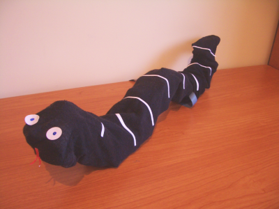 |
@obijuan
> jajajajajajaj
@obijuan > Y aquí podéis
ver cómo se mueve:
@obijuan >
http://www.iearobotics.com/personal/juan/doctorado/cube-revolutions/download/friki-cube1.avi
@obijuan
> Aquí está pasando por una ruta más
"difícil":
@obijuan >
http://www.iearobotics.com/personal/juan/doctorado/cube-revolutions/download/friki-cube2.avi
@obijuan
> Y aquí está haciendo el "cobra":
@obijuan
>
http://www.iearobotics.com/personal/juan/doctorado/cube-revolutions/download/friki-cube-cobra.avi
@obijuan
> jajajaj Este es el lado friki de la robótica
jjajajjaj
@obijuan > Para la electrónica de Cube
Revolutions se puede utilizar la tarjeta
CT6811, como en los anteriores, o bien la Skypic,
que es casi igual que la CT6811,
pero basada en el microcontrolador pic16f876a:
@obijuan
>
http://www.iearobotics.com/proyectos/skypic/skypic.html
@obijuan
> Para mover los servos hay que grabar en el micro el programa
servidor:
@obijuan >
http://www.iearobotics.com/proyectos/stargate/servidores/sg-servos8/sg-servos8.html
@obijuan
> Y en el PC se ejecuta un cliente que se comunica con el
microcontrolador a través del puerto serie:
@obijuan
>
http://www.iearobotics.com/proyectos/stargate/clientes/star-servos8/star-servos8.html
@obijuan
> Está escrito en C, con las librerías gráficas
GTK 2.0
@obijuan > Con Cube
Revolutions ya casi se le ha sacado todo el "jugo"
a un gusano que se pueda mover sólo en línea
recta.
@obijuan > Lo siguiente fue empezar a estudiar el
movimiento en 2D y el movimiento de otro tipo de
configuraciones
@obijuan > Así es como nació
MULTICUBE
@obijuan > Se me olvidaba, mirad esta
animación de Cube
Revolutions hecha con Blender:
@obijuan
>
http://www.iearobotics.com/personal/juan/doctorado/cube-revolutions/download/cube-virtual-cobra.avi
|
MULTICUBE |
@obijuan
> En Octubre de 2004 decidí fabricar 8 nuevos módulos
Y1, pero esta vez de una forma más
industrial
@obijuan > Tomé los planos y los llevé
a una tienda de plásticos para que me entregasen las piezas
cortadas por láser (en vez de tener que hacerlas yo a
mano)
@obijuan > Como material utilicé
metacrilato gris de 3mm
@obijuan > Me hice la
siguiente pregunta:
@obijuan > ¿Cual es el mínimo
número de módulos necesarios para conseguir movimiento
tanto en línea recta como en 2D?
@obijuan >
Construí diferentes configuraciones de módulos. Al
conjunto de todas las configuraciones que construí las llamé
Multicube:
|
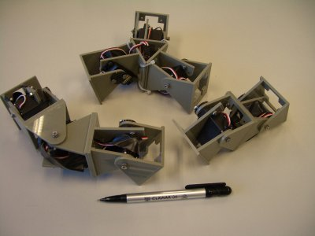 |
@obijuan
> Empecé primero analizando la configuración más
sencilla posible, constituida sólo por dos módulos
Y1, conectados en fase.
@obijuan
> Le puse el nombre de configuración PP (en
inglés, Pitch-Pitch):
|
|
@obijuan
> Es realmente interesante analizar su movimiento.
@obijuan
> Si hacemos que el ángulo de los dos módulos
varíe de forma sinusoidal, con la misma fase, es decir, que se
les aplique exactamente la misma onda sinusoidal, el rsultado
es que no hay movimiento:
@obijuan >
http://www.iearobotics.com/personal/juan/doctorado/Multicube/download/video01-pp-0.avi
@obijuan
> Si aplicamos un desfase de 180 grados, es decir, que
las dos ondas sean opuestas, tampoco hay movimiento:
@obijuan >
http://www.iearobotics.com/personal/juan/doctorado/Multicube/download/video02-pp-180.avi
@obijuan
> Pero si aplicamos un desfase de 120 grados, el
movimiento es muy bueno!!!!
@obijuan >
http://www.iearobotics.com/personal/juan/doctorado/Multicube/download/video03-pp-120.avi
@obijuan
> La variación de la amplitud hace que el movimiento
sea más rápido o más lento. Cambiando el signo
de la fase, se cambia el sentido del avance:
@obijuan >
http://www.iearobotics.com/personal/juan/doctorado/Multicube/download/video04-pp-120-forw-back.avi
@obijuan
> Interesante, verdad? :-)
@Moderador_uno >
Mucho
@Moderador_dos > Sí :)
@obijuan >
Una conclusión es que si quieres tener tu propio robot modular
que se mueva, sólo son necesarios dos módulos para que
esto ande y puedas experimentar
@obijuan > Es decir, que
con muy poco dinero puedes hacer experimentos de este tipo
@obijuan
> ¿Y para conseguir que se mueva por un
plano?
@obijuan > La siguiente configuración
mínima es la que bauticé como PYP (del inglés
Pitch-Yaw-Pitch):
|
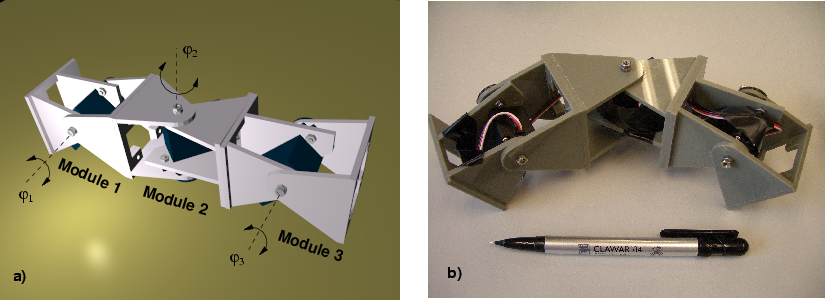 |
@obijuan
> Está constituida por tres módulos
Y1. El del centro está rotado 90 grados con
respecto a los otros
@obijuan > Ahora tenemos dos grados
de libertad. ¿Qué movimientos puede hacer esta
configuración?
@obijuan > Por supuesto puede
moverse en línea recta. No hay más que dejar el
módulo central en posición de 0 grados:
@obijuan
>
http://www.iearobotics.com/personal/juan/doctorado/Multicube/download/video05-pyp-1D-sinusoidal.avi
@obijuan
> Si queremos que gire, para describir un arco, no hay más
que fijar el módulo central a un ángulo distitno de
cero, como por ejemplo 30 grados:
@obijuan >
http://www.iearobotics.com/personal/juan/doctorado/Multicube/download/video06-pyp-2D-sinusoidal.avi
@obijuan
> Pero puede hacer otros movimientos, como por ejemplo
desplazarse lateralmente.
@obijuan > En esta
coordinación las articulaciones de los extremos se mueven con
la misma onda sinusoidal y la central está desfasada 90
grados:
@obijuan >
http://www.iearobotics.com/personal/juan/doctorado/Multicube/download/video07-pyp-lateral-shift.avi
@obijuan
> Y sin duda, para mí este es el movimiento más
espectacular. ¡Esta configuracion es capaz de
rotar!
@obijuan >
http://www.iearobotics.com/personal/juan/doctorado/Multicube/download/video08-pyp-lateral-rolling.avi
@obijuan
> chulo, eh? :-) No veáis cómo me lo pasé
investigando sobre estos temas
@Moderador_uno > Como un
niño en uncharco con botas nuevas ?
@obijuan > Estas
dos configuraciones de Multicube, PP y PYP, tienen una disposición
en 1 dimensión. En realidad son "cadenas de módulos
Y1"
@obijuan > Con estos módulos también
se pueden hacer criaturas en 2D, como la que os muestro a
continuación, que es una especie de estrella de mar:
|
|
@obijuan
> Su movimiento no es muy bueno, pero es un ejemplo de la
configuración mínima en 2D que se puede mover. Puede
moverse en línea recta según tres direcciones
diferentes:
@obijuan >
http://www.iearobotics.com/personal/juan/doctorado/Multicube/download/video09-three-star-sinusoidal.avi
@obijuan
> Y también puede rotar sobre un eje perpendicular al
suelo, muy lentamente:
@obijuan >
http://www.iearobotics.com/personal/juan/doctorado/Multicube/download/video10-three-star-rotation.avi
@obijuan
> Ahora ya tengo los elementos necesarios para comenzar con la
siguiente generación: HYPERCUBE
@obijuan >
Serán 8 módulos
Y1 conectados en desfase y podrá moverse en
línea recta y en 2D
@obijuan > Gracias la
financiación que logré por mi participación en
la Campus Party y también con la ayuda de Ifara,
@obijuan
> ya tengo las piezas y los servos para construir 20 módulos
Y1 más!!!
@obijuan > ¿Qué
nuevas criaturas saldrán en el futuro????
@obijuan
> Y con esto ya he terminado. Muchas gracias a todos
:-)
@Moderador_uno > Muchas gracias Juan por tu
interesante conferencia.
|
PREGUNTAS |
@Moderador_uno
> Ahora pasaremos a la sesión de preguntas.
@obijuan
> (ya no siento los dedos) :-)
@Mundobot
> Juan, yo tengo una duda
@Mundobot
> ¿es muy dura la robótica X-D?
@Mundobot
> X-D
@obijuan > jajjajaja tú lo
sabes mejor nadie. Sino mira esta foto:
|
|
@Moderador_uno
> ¿Sería muy difícil hacer que
cube fuese autónomo?. Es decir, sin estar conectado al
PC.
@obijuan > La robótica es realmente dura, y
genera mucho estresss
@obijuan > Por la electrónica
no hay problema. Las secuencias de movimiento y generación se
pueden meter en el PIC
@obijuan > El problema que veo es
la alimentación
@obijuan > Consume bastante y la
autonomía sería muy baja, pero sería
posible
+Ranganok >
hola
@obijuan > hola Ranganok
+Ranganok
> has pensado en repartir la alimentación por los
módulos Y?
+Ranganok >
para evitar el problema?
@obijuan > Así es como
lo tiene Polybot. Cada módulo tiene su propio
microprocesador y sus propias baterías. Creo que es la forma
más lógica
@obijuan > Tarde o temprano lo
implementaré :-)
@Moderador_uno
> ¿qué material has utilizado para la
fabricación de su estructura y por qué?
@obijuan
> En Multicube he usado metacrilato de 3mm
@obijuan
> Es muy fácil de cortar, de encotrar y además
es barato :-)
+manu_svq >
has probado a utilizar servos digitales de 15kg?
+manu_svq
> podrias obtener mayor amplitud de onda en el
movimiento
@obijuan > Nunca los he usado. Estoy con los
Futaba 3003 porque son
baratillos, pero meter unos de 15Kg sería
genial!!
@Moderador_dos >
Creo que utilizas Linux para controlar el robot. ¿Encontraste
muchas dificultades para controlar el hardware del robot con
Linux?
@obijuan > No, ninguna porque todo lo hago por el
puerto serie. Los servos los está controlando el
microcontrolador.
@obijuan > Yo sólo le mando por
el puerto serie las posiciones a las que quiero que vayan los
servos
+piranna > ¿has
pensado en realizar diseños 3D?
+piranna
> por ejemplo, un cubo con sus 6 caras con modulos
Y1
+piranna > y
extensiones a modo de brazos o tentáculos
@obijuan >
siii!!!! De hecho había pensado en hacer una especie de
"Esfera".
@obijuan > Sí, eso es lo
bueno de los robots modulares, que se puede hacer casi cualquier cosa
:-)
@obijuan > De hecho, en el PARC he visto que
están haciendo pequeños humanoides con sus módulos
|
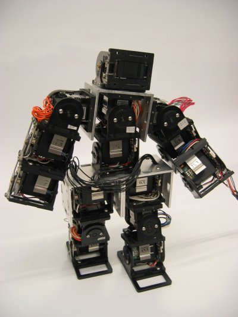 |
@obijuan
> Estaba buscando el link ;-)
+Ranganok
> cuales crees que son las aplicaciones más
inmediatas a este tipo de robots?
+Ranganok
> o en las que más puedan destacar?
@obijuan
> Hay unos japoneses que están trabajando en robots
ápodos (tipo serpiente) para búsqueda y rescate en
zonas catastróficas
@obijuan > Estos robots
pueden cambiar su forma y llegar a donde otros no pueden
@obijuan
> También había otros Japoneses que estaban
haciendo un endoscopio activo
@obijuan > Ese aparato que
te meten por la boca para mirarte el estómago y los
intestinos
@obijuan > Al ser tipo "gusano"
pueden adoptar la forma del intestino y dañarte menos
+piranna
> ¿y lo de realizar robot hibridos? ¿usar
los modulos Y1 como extensiones o brazos en robots normales? el brazo
de un volquete, o algo al estilo del Doctor Octopus... :-P
@obijuan
> sí, la imaginación al poder!!! :-)
+piranna
> pinzas, otros modulos terminales...
+piranna
> vamos, usar los modulos como si de piezas de Lego
se trataran
@obijuan > La ventaja de hacer robots
utilizando el mismo típo de módulo es que se pueden
fabricar en serie y saldrían más baratos
@obijuan
> Si, esa es la idea... y así saldría muy
barato. Esto es lo que están intentando en el
PARC
@Moderador_uno
> Tengo aqui una pregunta del Gran Pitufo que no ha
podido estar presente `pero me dejo la pregunta: ¿Y quieres
decir que todo esto lo has hecho porque no supistes hacer un brazo
robotico??
@obijuan > jajajajajajajajajj
@obijuan
> Pues en principio sí :-)
@obijuan > En
el futuro intentaré hacer otro, pero esta vez utilizando
tecnología modular ;-)
+piranna
> Ya tenemos el Y1 con el eje en X, y girandolo 90
en Y. ¿Has pensado diseñar (aunque sea solo por probar,
porque creo que es mas inestable mecanicamente) el diseño uno
con el eje en Z, de conector a conector y que gire sobre si
mismo?
+piranna
> asi, ya tendria robot modulares que se mueven en
el espacio 3D
@obijuan > Este verano estuve pensando en
un módulo parecido a ese y creo que sí que es
viable
+acicuecalo
> Juan, has pensado alguna vez en añadir
ruedas a esos módulos? (reinventando la rueda by
obijuan)
+acicuecalo
> Y gracias por la conferencia...
@obijuan >
Paco!!!! Qué alegría verte!!
+acicuecalo
> lo mismo digo, en serio, muy interesante la
conferencia!!
@obijuan > La idea de poner ruedas la
pensó Andrés.
Tenía pensado hacer una especie de vehículo modular
articulado con ruedas
@obijuan > Se podrían hacer
unas ruedas sencillas que se acoplen facilmente a la
estructura
@obijuan > acicuecalo: gracias
;-)
@Moderador_uno > Bien, pues si no hay más
preguntas, damos por finalizada la primera conferencia en el irc de
A.R.D.E.
@Moderador_dos
> Muchas gracias Juan por el tiempo e interés que nos
has dedicado.
@Moderador_dos > Mañana colgaremos
en la Web de A.R.D.E.
(www.webdearde.com) el log de la
conferencia.
@obijuan > Muchas gracias por
invitarme
@Moderador_uno > Muchas gracias Juan por el
tiempo e interés que nos has dedicado.
A Alejandro Alonso, una vez más, por invitarme a dar esta charla. ¡Muchas gracias! ;-)
A toda la gente de A.R.D.E. involucrada en la organización y desarrollo del evento: webmasters, moderadores... ¡Muchas gracias!


{kind=link}